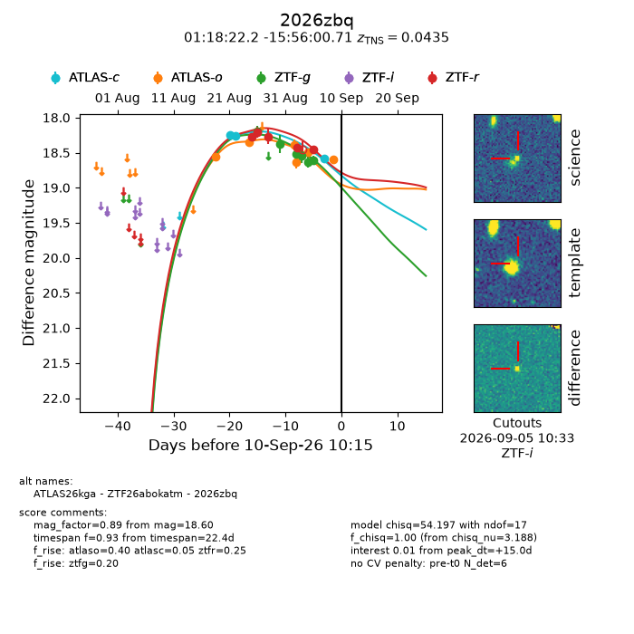
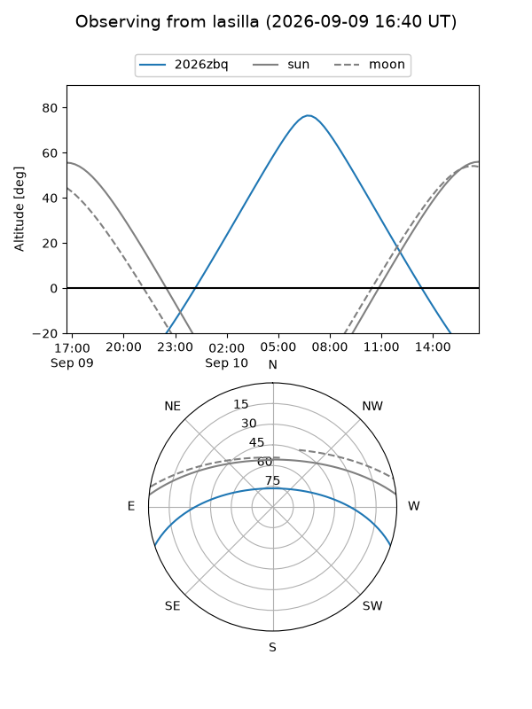
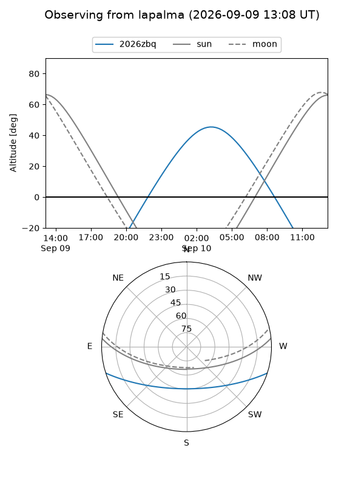
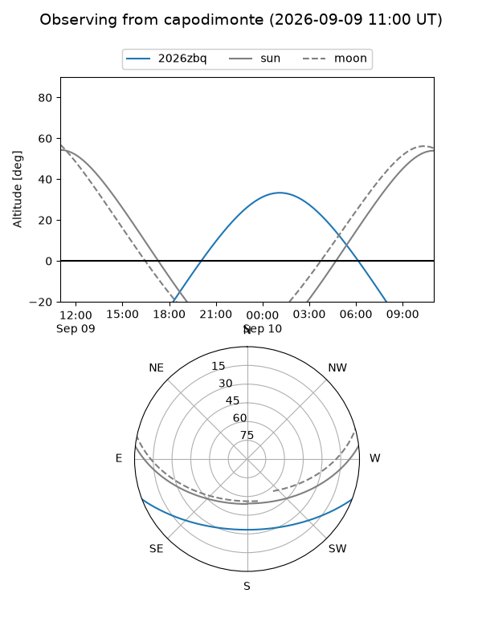
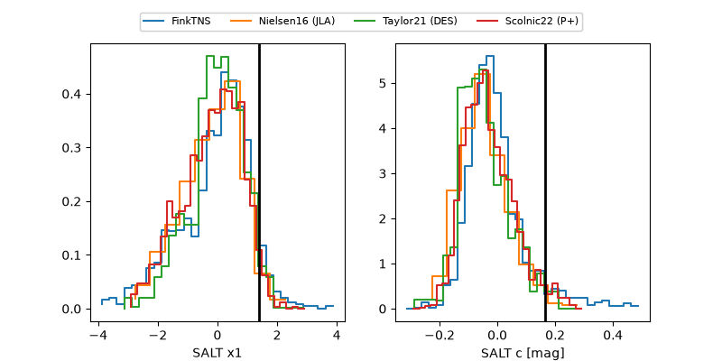

2026zbq
Target 2026zbq at 2026-09-10 10:17
Aliases and brokers:
FINK-ZTF: ztf.fink-portal.org/ZTF26abokatm
Lasair-ZTF: lasair-ztf.lsst.ac.uk/objects/ZTF26abokatm
ALeRCE-ZTF: alerce.online/object/ZTF26abokatm
YSE-PZ: ziggy.ucolick.org/yse/transient_detail/2026zbq
TNS name: wis-tns.org/object/2026zbq
Direct TNS query: direct search
alt names
ZTF26abokatm (ztf,fink_ztf)
2026zbq (tns,yse)
ATLAS26kga (atlas)
Coordinates:
equatorial (ra, dec) = 19.5923,-15.93353
equatorial (HMS+DMS) = 01:18:22.15,-15:56:00.71
galactic (l, b) = (153.4669,-77.17980)
Flags:
TNS type: SN II
TNS redshift: 0.0435
peak dt: +15.0
Photometry:
last atlasc=18.59, atlaso=18.60, ztfg=18.61, ztfr=18.45
3 atlasc, 6 atlaso, 6 ztfg, 5 ztfr detections
Lightcurve

Visibility



Additional plots
